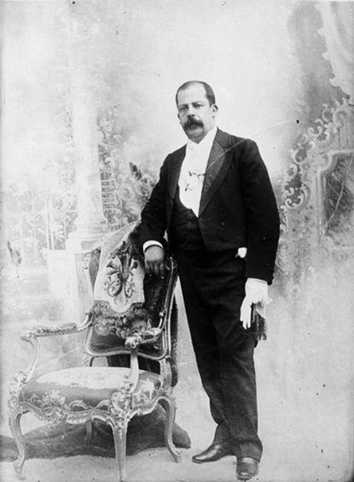

Personajes principales

Benito Juárez
Presidente de México durante el siglo XIX. Sus gobiernos impulsaron cambios políticos y leyes que modificaron la organización del país y la propiedad de la tierra.

Porfirio Díaz
Durante su gobierno se impulsó el crecimiento económico, pero también aumentaron los conflictos agrarios debido a la concentración de tierras y afectaciones a comunidades indígenas.

Manuel Lozada
Líder social conocido como el "Tigre de Álica". Defendió los intereses de comunidades indígenas y campesinas del occidente de México.